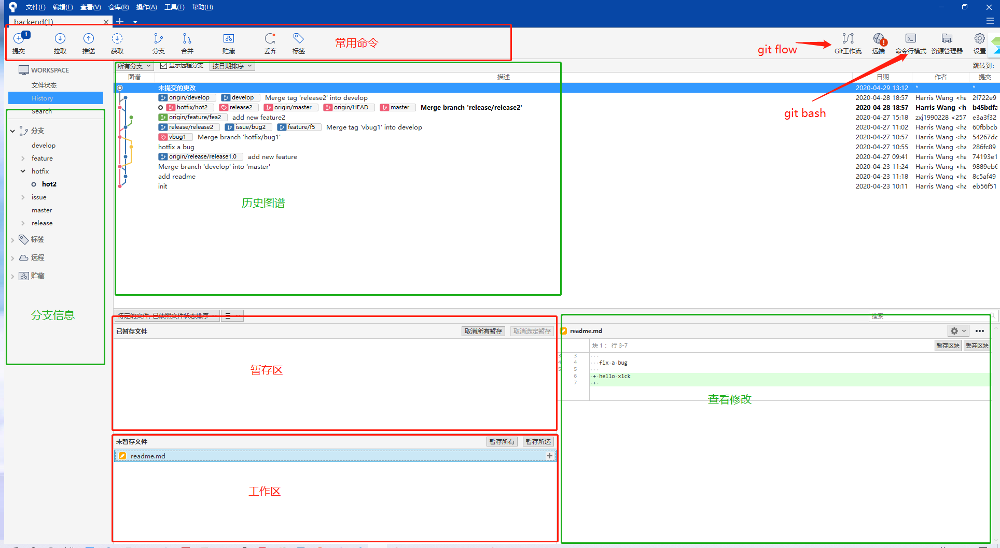

软件团队协作工具介绍
安装
docker
docker-compose
vsftpd
zbox
gitlab
nginx
使用
配置hosts
vsftpd
sourcetree
安装
克隆仓库
基本操作
gitflow介绍
gitflow初始化
建立新的功能
完成新功能
建立新的发布版本
修复发布版本中的问题
完成发布版本
建立新的修复补丁
完成修复补丁
gitlab
用户
项目组
项目
分支保护
代码审核
jenkins
数据备份
本书使用 GitBook 发布
基本操作
基本操作
基本操作

results matching "
"
No results matching "
"